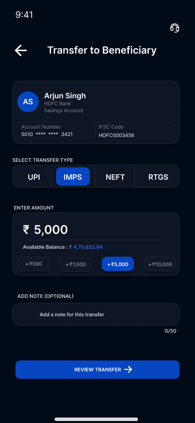
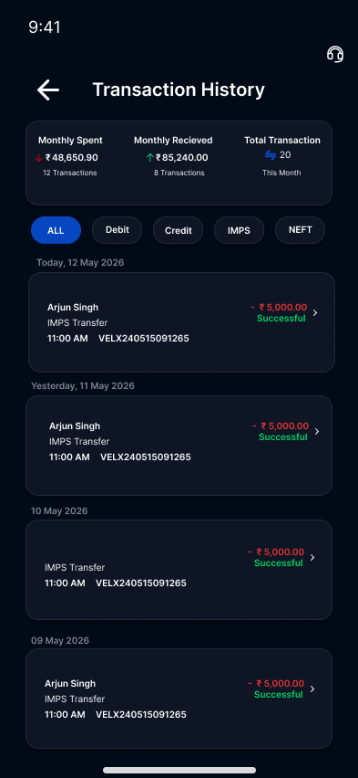
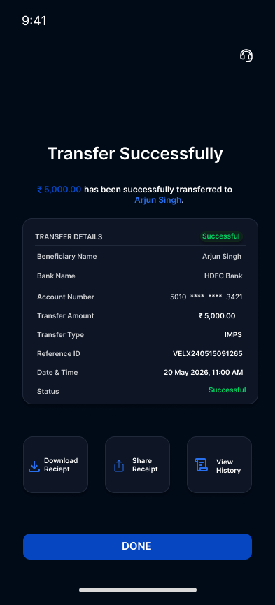

PRODUCT DESIGN CASE STUDY
VELIX
VELIX is a modern mobile banking application designed to simplify everyday financial management through intuitive navigation, secure transactions and a clean user experience. The project focuses on helping users complete common banking tasks quickly while maintaining trust, accessibility and consistency across the interface.
Project Overview
Role
UI/UX Designer & Product Designer
Tools
Figma, FigJam, Photoshop
Project Type
Concept Banking Application
Core Features
- User Authentication
- Secure Login
- PIN Verification
- Dashboard
- Money Transfer
- Transaction History
- Card Management
- Notifications
- Profile Management
- Payment Confirmation
The Problem
Many banking applications contain numerous financial services that overwhelm users and make common actions slower than necessary.
VELIX was designed to reduce interface complexity and prioritize essential banking tasks such as checking balances, transferring money and managing transactions through a modern, intuitive interface.
Goals
- Create a clean banking experience
- Improve navigation
- Reduce user effort
- Build trust through design
- Create a scalable Design System
- Maintain accessibility
Competitor Analysis
To better understand existing banking experiences, I analyzed leading financial applications including Google Pay, PhonePe, Paytm, Revolut and Monzo. The research focused on navigation patterns, dashboard layouts, transaction workflows, and visual consistency.
- Google Pay – Simple onboarding and fast QR payments.
- PhonePe – Strong UPI experience with feature-rich navigation.
- Paytm – Comprehensive ecosystem but information-heavy interface.
- Revolut – Premium UI with excellent budgeting features.
- Monzo – Minimal interface and clear transaction history.
Design Decisions
- Prioritized account balance on the dashboard.
- Reduced visual clutter.
- Used consistent spacing and typography.
- Highlighted primary actions like Transfer and Scan QR.
- Maintained a minimal dark theme to improve readability.
Target Users
Primary Users
- Working professionals managing daily finances
- College students using UPI and digital banking
- Small business owners handling frequent transactions
User Goals
- Check account balance quickly
- Transfer money securely
- Pay bills efficiently
- Monitor transaction history
- Manage cards from one place
Pain Points
- Cluttered banking interfaces
- Too many unnecessary features
- Complex navigation for everyday tasks
- Lack of clear financial overview
User Flow
- Login
- →
- Dashboard
- →
- Transfer Money
- →
- Enter Amount
- ↓
- Confirm Payment
- →
- Payment Successful
Low-Fidelity Wireframes
Before creating the final interface, I explored different layouts using low-fidelity wireframes. This helped establish the information hierarchy, navigation structure and placement of primary banking actions before moving into visual design.
Design System
To maintain consistency across the application, I created a reusable design system. It defines the visual language of VELIX, including colors, typography, buttons, input fields, cards, icons, spacing, and reusable UI components.
Colors
- Primary – Blue
- Background – Dark Gray
- Surface – Charcoal
- Success – Green
- Error – Red
- Text – White & Gray
Typography
- Heading – Bold
- Body – Regular
- Caption – Medium
Components
- Buttons
- Input Fields
- Cards
- Navigation Bar
- Transaction List
- Profile Cards
Final UI
After validating the wireframes and design system, I designed the final high-fidelity interfaces. The focus was on clarity, consistency, accessibility, and efficient financial management.

Transfer Money

Transactions

Payment Successful
Interactive Prototype
An interactive prototype was created in Figma to simulate the complete banking experience, including authentication, dashboard navigation, money transfers, and profile management.
Reflection
Designing VELIX strengthened my understanding of user-centered design, information hierarchy, design systems, and financial product workflows. Throughout the project, I learned how research, user flows, wireframes, and visual design work together to create intuitive digital experiences.
If I continue improving this project, I would conduct usability testing with real users, refine the onboarding experience, and expand the budgeting and analytics features.
Project Outcomes
- Designed complete banking workflow
- Created reusable design system
- Designed over 15 mobile screens
- Built interactive prototype
- Improved usability through simplified navigation
Design Process
The project started with competitor analysis of Google Pay, PhonePe, Paytm, Revolut and Monzo.
Research findings were translated into user flows, wireframes and a scalable design system before creating high-fidelity interfaces and interactive prototypes.